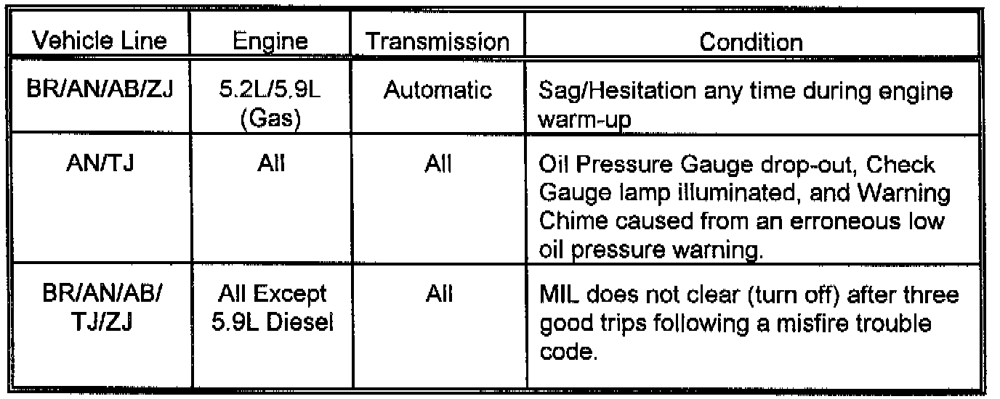
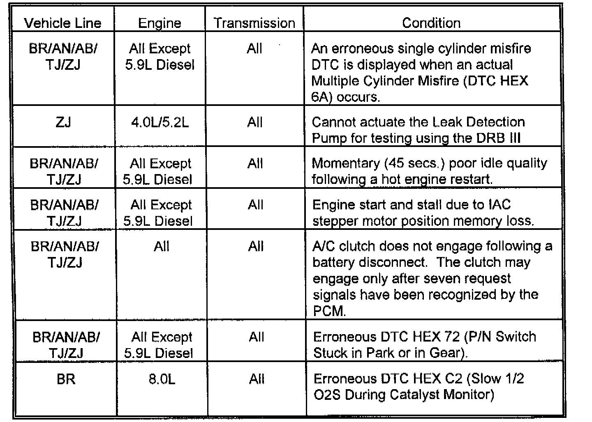
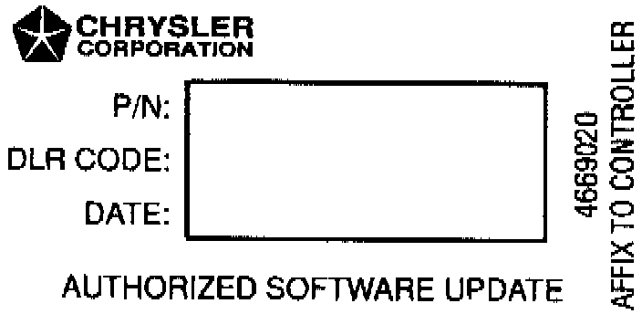
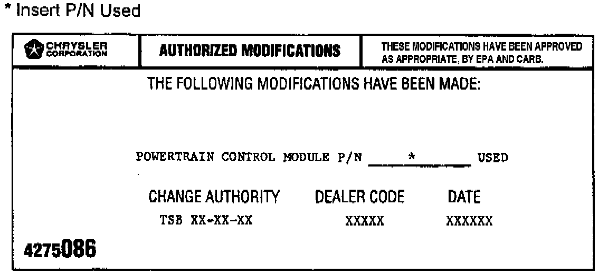

PCM - Erroneous MIL, and/or Driveability Concerns
NO: 18-26-96GROUP: Vehicle Performance
DATE: Sep. 27, 1996
SUBJECT:
Erroneous MIL Illumination and/or Driveability Concerns
MODELS:
1997 (AB) Ram Van/wagon
1997 (AN) Dakota
1997 (BR) Ram Truck
1997 (ZJ) Grand Cherokee
1997 (TJ) Wrangler
NOTE:
THIS BULLETIN DOES NOT APPLY TO 1997 WRANGLERS BUILT BEFORE JULY 15, 1996 (MDH 0715XX). 1997 WRANGLERS BUILT AFTER THIS DATE CAN BE IDENTIFIED BY HAVING A TEN DIGIT PART NUMBER ON THE POWERTRAIN CONTROL MODULE (PCM) WHERE AS VEHICLES BUILT PRIOR TO THIS DATE HAVE AN EIGHT DIGIT PART NUMBER ON THE PCM.
SYMPTOM/CONDITION:


These illustrations list PCM updates for erroneous MIL (Check Engine Lamp) illumination and/or driveability concerns. Please perform updates to the PCM for any vehicle listed above that you encounter.
DIAGNOSIS:
Using the Mopar Diagnostic System (MDS) or the Scan Tool (DRB III) and appropriate Diagnostic Procedure Manual, verify that all engine systems are functioning correctly. If Diagnostic Trouble Codes (DTC's) are present, record them on the repair order. Any DTCs not identified in this TSB and/or DTCs identified in this TSB that are not listed in the SYMPTOM/CONDITION as erroneous should be repaired as necessary. If any of the above conditions or DTCs exist, perform the Repair Procedure.
EQUIPMENT/PARTS REQUIRED:
1 CH6000 Scan Tool (DRB III)
1 CH7035 General Purpose Interface Bus Cable (GPIB)
1 CH7000 J1962 Cable
1 4669020 Label - Authorized Software Update
1 4275086 Label - Authorized Modification
REPAIR PROCEDURE:
This bulletin involves selectively erasing and reprogramming the Powertrain Control Module (PCM) with new software (calibration change).
NOTE:
MDS AND DRB III ARE REQUIRED TO PERFORM THE FOLLOWING REPAIR. MDS MUST BE OPERATING WITH RELEASE 20 OR HIGHER AND TIL 1117 OR HIGHER INSTALLED.
1. Connect the MDS to the DRB III and connect the DRB III to the vehicle 16-way Data Link Connector (DLC) and power them up.
2. Use the arrow keys and select # 2 MDS DIAGNOSTICS on the DRB III MAIN MENU Screen.
3. Use the arrow keys and select DIAGNOSTIC MENU on the MDS, then press NEXT MENU.
4. Use the arrow keys and select VEHICLE CONTROLLER PROGRAMMING on the MDS, then press NEXT MENU.
5. Use the arrow keys and select PROGRAMMING OF ALL OTHER CONTROLLERS WITH MDS AND DRB III on the MDS then press NEXT MENU.
6. Follow the steps presented on the MDS and DRB III which will allow the DRB III to obtain the current part number of the PCM.
7. The MDS will display the part number of the PCM on the vehicle and the appropriate replacement part number, then press NEXT MENU to begin programming.
If the PCM on the vehicle has already been updated or programmed, a NO UPDATES AVAILABLE message will be displayed. Check the part number of the PCM on the vehicle and compare it to the part number displayed. If the PCM has already been updated, then a system problem actually exists and should be corrected.
8. The MDS and DRB III will prompt the operator for any action needed during the remainder of the programming process.
NOTE:
THE FOLLOWING STEPS ARE REQUIRED BY LAW.

9. Type the necessary information on the "Authorized Software Update" label, P/N 4669020. Attach the label to the PCM and cover the label with the clear plastic overlay.

10. Type the necessary information on the Authorized Modification Label and attach the label near the VECI Label.
POLICY: Reimbursable within the provisions of the warranty.
TIME ALLOWANCE:
Labor Operation No: Reprogram Powertrain Control Module
08-19-46-90 0.5 Hrs.
FAILURE CODE: FM - Flash Module